Last updated: 2026-02-02
Checks: 7 0
Knit directory: muse/
This reproducible R Markdown analysis was created with workflowr (version 1.7.1). The Checks tab describes the reproducibility checks that were applied when the results were created. The Past versions tab lists the development history.
Great! Since the R Markdown file has been committed to the Git repository, you know the exact version of the code that produced these results.
Great job! The global environment was empty. Objects defined in the global environment can affect the analysis in your R Markdown file in unknown ways. For reproduciblity it’s best to always run the code in an empty environment.
The command set.seed(20200712) was run prior to running
the code in the R Markdown file. Setting a seed ensures that any results
that rely on randomness, e.g. subsampling or permutations, are
reproducible.
Great job! Recording the operating system, R version, and package versions is critical for reproducibility.
Nice! There were no cached chunks for this analysis, so you can be confident that you successfully produced the results during this run.
Great job! Using relative paths to the files within your workflowr project makes it easier to run your code on other machines.
Great! You are using Git for version control. Tracking code development and connecting the code version to the results is critical for reproducibility.
The results in this page were generated with repository version e07f85f. See the Past versions tab to see a history of the changes made to the R Markdown and HTML files.
Note that you need to be careful to ensure that all relevant files for
the analysis have been committed to Git prior to generating the results
(you can use wflow_publish or
wflow_git_commit). workflowr only checks the R Markdown
file, but you know if there are other scripts or data files that it
depends on. Below is the status of the Git repository when the results
were generated:
Ignored files:
Ignored: .Rproj.user/
Ignored: data/1M_neurons_filtered_gene_bc_matrices_h5.h5
Ignored: data/293t/
Ignored: data/293t_3t3_filtered_gene_bc_matrices.tar.gz
Ignored: data/293t_filtered_gene_bc_matrices.tar.gz
Ignored: data/5k_Human_Donor1_PBMC_3p_gem-x_5k_Human_Donor1_PBMC_3p_gem-x_count_sample_filtered_feature_bc_matrix.h5
Ignored: data/5k_Human_Donor2_PBMC_3p_gem-x_5k_Human_Donor2_PBMC_3p_gem-x_count_sample_filtered_feature_bc_matrix.h5
Ignored: data/5k_Human_Donor3_PBMC_3p_gem-x_5k_Human_Donor3_PBMC_3p_gem-x_count_sample_filtered_feature_bc_matrix.h5
Ignored: data/5k_Human_Donor4_PBMC_3p_gem-x_5k_Human_Donor4_PBMC_3p_gem-x_count_sample_filtered_feature_bc_matrix.h5
Ignored: data/97516b79-8d08-46a6-b329-5d0a25b0be98.h5ad
Ignored: data/Parent_SC3v3_Human_Glioblastoma_filtered_feature_bc_matrix.tar.gz
Ignored: data/brain_counts/
Ignored: data/cl.obo
Ignored: data/cl.owl
Ignored: data/jurkat/
Ignored: data/jurkat:293t_50:50_filtered_gene_bc_matrices.tar.gz
Ignored: data/jurkat_293t/
Ignored: data/jurkat_filtered_gene_bc_matrices.tar.gz
Ignored: data/pbmc20k/
Ignored: data/pbmc20k_seurat/
Ignored: data/pbmc3k.csv
Ignored: data/pbmc3k.csv.gz
Ignored: data/pbmc3k.h5ad
Ignored: data/pbmc3k/
Ignored: data/pbmc3k_bpcells_mat/
Ignored: data/pbmc3k_export.mtx
Ignored: data/pbmc3k_matrix.mtx
Ignored: data/pbmc3k_seurat.rds
Ignored: data/pbmc4k_filtered_gene_bc_matrices.tar.gz
Ignored: data/pbmc_1k_v3_filtered_feature_bc_matrix.h5
Ignored: data/pbmc_1k_v3_raw_feature_bc_matrix.h5
Ignored: data/refdata-gex-GRCh38-2020-A.tar.gz
Ignored: data/seurat_1m_neuron.rds
Ignored: data/t_3k_filtered_gene_bc_matrices.tar.gz
Ignored: r_packages_4.4.1/
Ignored: r_packages_4.5.0/
Untracked files:
Untracked: .claude/
Untracked: CLAUDE.md
Untracked: analysis/bioc.Rmd
Untracked: analysis/bioc_scrnaseq.Rmd
Untracked: analysis/chick_weight.Rmd
Untracked: analysis/likelihood.Rmd
Untracked: bpcells_matrix/
Untracked: data/Caenorhabditis_elegans.WBcel235.113.gtf.gz
Untracked: data/GCF_043380555.1-RS_2024_12_gene_ontology.gaf.gz
Untracked: data/arab.rds
Untracked: data/astronomicalunit.csv
Untracked: data/femaleMiceWeights.csv
Untracked: data/lung_bcell.rds
Untracked: m3/
Untracked: women.json
Unstaged changes:
Modified: analysis/isoform_switch_analyzer.Rmd
Modified: analysis/linear_models.Rmd
Note that any generated files, e.g. HTML, png, CSS, etc., are not included in this status report because it is ok for generated content to have uncommitted changes.
These are the previous versions of the repository in which changes were
made to the R Markdown (analysis/anova.Rmd) and HTML
(docs/anova.html) files. If you’ve configured a remote Git
repository (see ?wflow_git_remote), click on the hyperlinks
in the table below to view the files as they were in that past version.
| File | Version | Author | Date | Message |
|---|---|---|---|---|
| Rmd | e07f85f | Dave Tang | 2026-02-02 | Update with more explanations and examples |
| html | 78ef683 | Dave Tang | 2025-04-02 | Build site. |
| Rmd | 2381c59 | Dave Tang | 2025-04-02 | ANOVA |
ANOVA (Analysis of Variance) is a statistical test used to compare the means of three or more groups to see if at least one group is significantly different. If you have only two groups, a t-test is usually better because it is simpler and more powerful for two-group comparisons. However, the t-test can only compare two groups at a time. ANOVA checks for overall differences among all groups.
If gene expression is measured across different conditions (e.g., Control, Treatment A, Treatment B), ANOVA tests whether the average expression levels differ significantly across these conditions.
In scRNA-seq, ANOVA can be useful when analysing gene expression differences across multiple conditions or cell types. If we have three conditions (Control, A, and B) we can use ANOVA to check whether a gene’s expression significantly changes across the conditions. Note that the ANOVA test will indicate that there’s a difference, but not which groups are different (a post-hoc test like Tukey’s HSD can be used). Tukey’s HSD (Honestly Significant Difference) test can be used to determine which specific groups are significantly different from each other. It compares all possible group pairs and controls for multiple testing.
Sum of Squares (SS) measures the total amount of variation in data. It is calculated by summing the squared differences between each observation and a reference point (usually a mean). We square the differences so that positive and negative deviations don’t cancel out.
\[SS = \sum(x_i - \bar{x})^2\]
The key insight of ANOVA is that we can partition the total variation into meaningful components:
\[SS_{total} = SS_{between} + SS_{within}\]
This partitioning allows us to ask: “How much of the total variation is due to differences between groups versus variation within groups?”
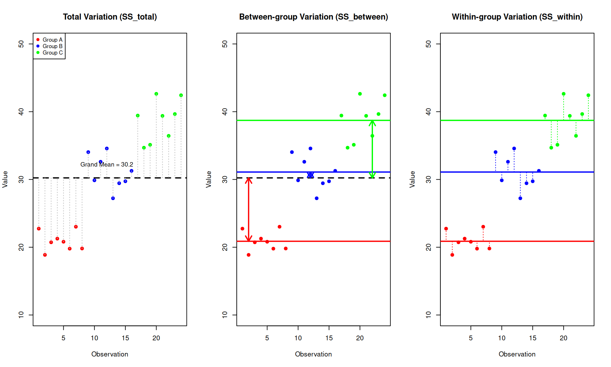
Between-group variance measures how much the group means differ from the overall (grand) mean. It answers: “How spread out are the group averages?”
This is the variation we are interested in - it represents the effect of our experimental factor (e.g., treatment).
Within-group variance measures how much individual observations vary around their own group mean. It answers: “How spread out are observations within each group?”
ANOVA compares these two sources of variation:
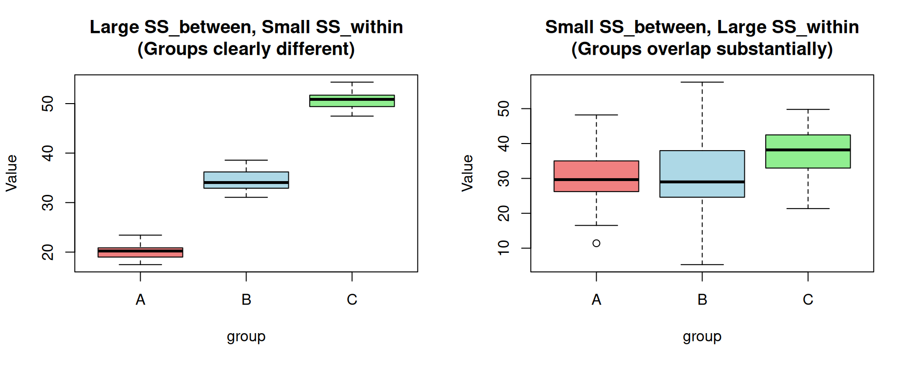
Now that we understand the concepts, here are the formal definitions:
Total Sum of Squares - deviation of each observation from the grand mean: \[SS_{total} = \sum_{i=1}^{k}\sum_{j=1}^{n_i}(x_{ij} - \bar{x}_{grand})^2\]
Between-group Sum of Squares - deviation of group means from the grand mean (weighted by group size): \[SS_{between} = \sum_{i=1}^{k}n_i(\bar{x}_i - \bar{x}_{grand})^2\]
Within-group Sum of Squares - deviation of observations from their group mean: \[SS_{within} = \sum_{i=1}^{k}\sum_{j=1}^{n_i}(x_{ij} - \bar{x}_i)^2\]
Where:
The F-statistic is calculated as the ratio of between-group variance to within-group variance:
\[F = \frac{MS_{between}}{MS_{within}} = \frac{SS_{between}/df_{between}}{SS_{within}/df_{within}}\]
Where:
A large F-statistic indicates that the between-group variance is larger than expected by chance, suggesting the group means differ.
Let’s calculate ANOVA by hand to understand the mechanics:
# Three groups with 5 observations each
group_a <- c(23, 25, 27, 22, 24)
group_b <- c(30, 32, 28, 31, 29)
group_c <- c(35, 38, 36, 34, 37)
# Combine data
all_data <- c(group_a, group_b, group_c)
groups <- factor(rep(c("A", "B", "C"), each = 5))
# Calculate means
grand_mean <- mean(all_data)
group_means <- c(mean(group_a), mean(group_b), mean(group_c))
n_per_group <- 5
k <- 3 # number of groups
N <- length(all_data)
cat("Grand mean:", grand_mean, "\n")Grand mean: 30.06667 cat("Group means:", group_means, "\n")Group means: 24.2 30 36 # Calculate Sum of Squares
ss_between <- sum(n_per_group * (group_means - grand_mean)^2)
ss_within <- sum((group_a - group_means[1])^2) +
sum((group_b - group_means[2])^2) +
sum((group_c - group_means[3])^2)
ss_total <- sum((all_data - grand_mean)^2)
cat("\nSum of Squares:\n")
Sum of Squares:cat("SS_between:", ss_between, "\n")SS_between: 348.1333 cat("SS_within:", ss_within, "\n")SS_within: 34.8 cat("SS_total:", ss_total, "\n")SS_total: 382.9333 cat("SS_between + SS_within =", ss_between + ss_within, "(should equal SS_total)\n")SS_between + SS_within = 382.9333 (should equal SS_total)# Calculate degrees of freedom
df_between <- k - 1
df_within <- N - k
# Calculate Mean Squares
ms_between <- ss_between / df_between
ms_within <- ss_within / df_within
cat("\nMean Squares:\n")
Mean Squares:cat("MS_between:", ms_between, "\n")MS_between: 174.0667 cat("MS_within:", ms_within, "\n")MS_within: 2.9 # Calculate F-statistic
f_stat <- ms_between / ms_within
p_value <- pf(f_stat, df_between, df_within, lower.tail = FALSE)
cat("\nF-statistic:", f_stat, "\n")
F-statistic: 60.02299 cat("p-value:", p_value, "\n")p-value: 5.632957e-07 Verify with R’s aov() function:
df <- data.frame(value = all_data, group = groups)
anova_result <- aov(value ~ group, data = df)
summary(anova_result) Df Sum Sq Mean Sq F value Pr(>F)
group 2 348.1 174.1 60.02 5.63e-07 ***
Residuals 12 34.8 2.9
---
Signif. codes: 0 '***' 0.001 '**' 0.01 '*' 0.05 '.' 0.1 ' ' 1ANOVA has several assumptions that should be checked:
Observations should be independent of each other. This is a study design issue.
The residuals should be approximately normally distributed. Check with:
# Using the manual example data
shapiro.test(residuals(anova_result))
Shapiro-Wilk normality test
data: residuals(anova_result)
W = 0.94877, p-value = 0.5053# Q-Q plot
par(mfrow = c(1, 2))
plot(anova_result, which = 2)
hist(residuals(anova_result), main = "Histogram of Residuals",
xlab = "Residuals", col = "lightblue")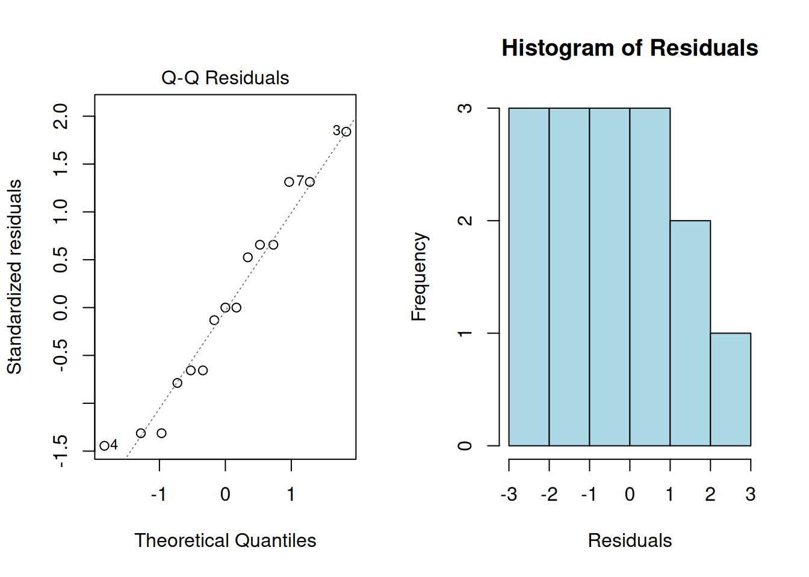
par(mfrow = c(1, 1))The variance should be approximately equal across groups. Check with Levene’s test or Bartlett’s test:
# Bartlett's test (sensitive to non-normality)
bartlett.test(value ~ group, data = df)
Bartlett test of homogeneity of variances
data: value by group
Bartlett's K-squared = 0.19158, df = 2, p-value = 0.9087# Visual check
boxplot(value ~ group, data = df, main = "Variance by Group",
col = c("lightblue", "lightgreen", "lightyellow"))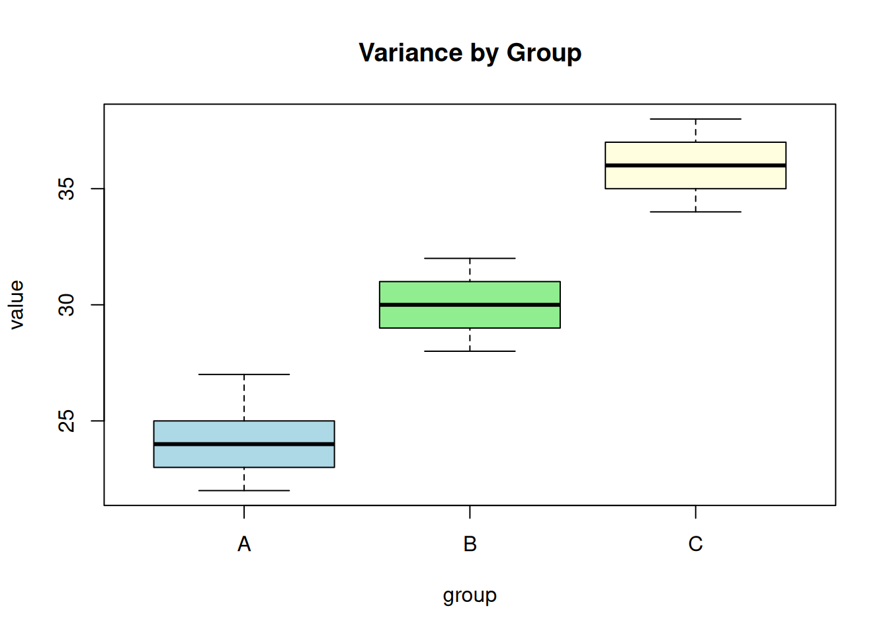
| Violation | Solution |
|---|---|
| Non-normality | Use Kruskal-Wallis test (non-parametric) |
| Unequal variances | Use Welch’s ANOVA |
| Both | Use Kruskal-Wallis test |
# Welch's ANOVA (doesn't assume equal variances)
oneway.test(value ~ group, data = df, var.equal = FALSE)
One-way analysis of means (not assuming equal variances)
data: value and group
F = 52.688, num df = 2.0000, denom df = 7.9417, p-value = 2.607e-05One-way ANOVA tests for differences in means across groups defined by a single factor.
gene_expr <- data.frame(
Expression = c(5.2, 4.8, 5.1, 6.3, 6.8, 6.5, 7.2, 7.5, 7.1),
Condition = rep(c("control", "treated1", "treated2"), each = 3)
)
ggplot(gene_expr, aes(Condition, Expression)) +
geom_boxplot(fill = "lightblue") +
geom_jitter(width = 0.1, alpha = 0.7) +
theme_minimal() +
labs(title = "Gene Expression by Condition")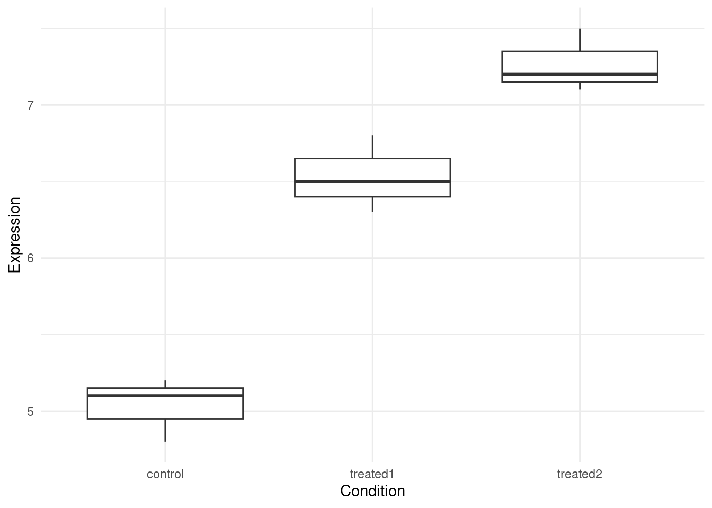
| Version | Author | Date |
|---|---|---|
| 78ef683 | Dave Tang | 2025-04-02 |
anova_result <- aov(Expression ~ Condition, data = gene_expr)
summary(anova_result) Df Sum Sq Mean Sq F value Pr(>F)
Condition 2 7.776 3.888 77.76 5.13e-05 ***
Residuals 6 0.300 0.050
---
Signif. codes: 0 '***' 0.001 '**' 0.01 '*' 0.05 '.' 0.1 ' ' 1| Column | Meaning |
|---|---|
| Df | Degrees of freedom |
| Sum Sq | Sum of Squares |
| Mean Sq | Mean Square (Sum Sq / Df) |
| F value | F-statistic (ratio of Mean Sq) |
| Pr(>F) | p-value |
In this example:
ANOVA tells us that groups differ, but not which groups. Post-hoc tests identify specific differences.
Tukey’s HSD compares all pairs of groups while controlling for multiple testing:
tukey_result <- TukeyHSD(anova_result)
tukey_result Tukey multiple comparisons of means
95% family-wise confidence level
Fit: aov(formula = Expression ~ Condition, data = gene_expr)
$Condition
diff lwr upr p adj
treated1-control 1.5000000 0.9398123 2.060188 0.0004304
treated2-control 2.2333333 1.6731456 2.793521 0.0000448
treated2-treated1 0.7333333 0.1731456 1.293521 0.0164307Interpretation:
diff = difference between group meanslwr and upr = 95% confidence interval for
the differencep adj = adjusted p-valueIf the confidence interval doesn’t include 0, the difference is significant.
plot(tukey_result, las = 1, col = "blue")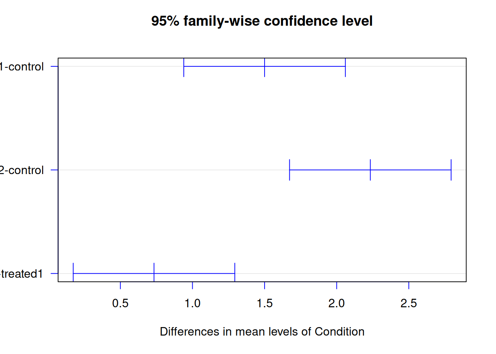
# Pairwise t-tests with Bonferroni correction
pairwise.t.test(gene_expr$Expression, gene_expr$Condition, p.adjust.method = "bonferroni")
Pairwise comparisons using t tests with pooled SD
data: gene_expr$Expression and gene_expr$Condition
control treated1
treated1 0.00053 -
treated2 5.5e-05 0.02096
P value adjustment method: bonferroni # Pairwise t-tests with Holm correction (less conservative)
pairwise.t.test(gene_expr$Expression, gene_expr$Condition, p.adjust.method = "holm")
Pairwise comparisons using t tests with pooled SD
data: gene_expr$Expression and gene_expr$Condition
control treated1
treated1 0.00035 -
treated2 5.5e-05 0.00699
P value adjustment method: holm Statistical significance doesn’t tell us about practical importance. Effect size measures help:
Eta-squared represents the proportion of variance explained by the factor:
\[\eta^2 = \frac{SS_{between}}{SS_{total}}\]
# Extract sum of squares from ANOVA
ss <- summary(anova_result)[[1]]$`Sum Sq`
ss_between <- ss[1]
ss_total <- sum(ss)
eta_squared <- ss_between / ss_total
cat("Eta-squared:", round(eta_squared, 3), "\n")Eta-squared: 0.963 Omega-squared is a less biased estimate:
\[\omega^2 = \frac{SS_{between} - df_{between} \times MS_{within}}{SS_{total} + MS_{within}}\]
ms_within <- ss[2] / summary(anova_result)[[1]]$Df[2]
df_between <- summary(anova_result)[[1]]$Df[1]
omega_squared <- (ss_between - df_between * ms_within) / (ss_total + ms_within)
cat("Omega-squared:", round(omega_squared, 3), "\n")Omega-squared: 0.945 | Effect Size | \(\eta^2\) / \(\omega^2\) |
|---|---|
| Small | 0.01 |
| Medium | 0.06 |
| Large | 0.14 |
Two-way ANOVA examines the effect of two factors and their interaction.
# Simulated experiment: Drug effect across different cell types
set.seed(42)
two_way_data <- expand.grid(
Drug = c("Placebo", "Drug_A", "Drug_B"),
CellType = c("Type1", "Type2"),
Replicate = 1:5
)
# Simulate expression values with main effects and interaction
two_way_data$Expression <- with(two_way_data, {
base <- 10
drug_effect <- ifelse(Drug == "Placebo", 0,
ifelse(Drug == "Drug_A", 3, 5))
cell_effect <- ifelse(CellType == "Type1", 0, 2)
# Interaction: Drug_B works better in Type2 cells
interaction <- ifelse(Drug == "Drug_B" & CellType == "Type2", 3, 0)
base + drug_effect + cell_effect + interaction + rnorm(nrow(two_way_data), 0, 1)
})
head(two_way_data) Drug CellType Replicate Expression
1 Placebo Type1 1 11.37096
2 Drug_A Type1 1 12.43530
3 Drug_B Type1 1 15.36313
4 Placebo Type2 1 12.63286
5 Drug_A Type2 1 15.40427
6 Drug_B Type2 1 19.89388ggplot(two_way_data, aes(Drug, Expression, fill = CellType)) +
geom_boxplot() +
theme_minimal() +
labs(title = "Two-way ANOVA: Drug Effect by Cell Type")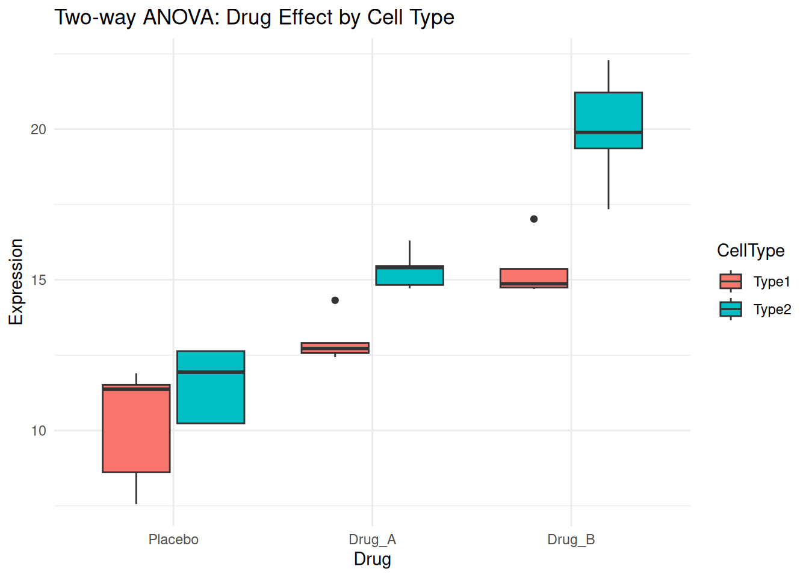
# Two-way ANOVA with interaction
two_way_result <- aov(Expression ~ Drug * CellType, data = two_way_data)
summary(two_way_result) Df Sum Sq Mean Sq F value Pr(>F)
Drug 2 232.45 116.22 64.289 2.29e-10 ***
CellType 1 58.49 58.49 32.353 7.37e-06 ***
Drug:CellType 2 14.67 7.34 4.058 0.0303 *
Residuals 24 43.39 1.81
---
Signif. codes: 0 '***' 0.001 '**' 0.01 '*' 0.05 '.' 0.1 ' ' 1Interpretation:
A significant interaction means the effect of one factor depends on the level of the other factor.
# Calculate means for interaction plot
interaction_means <- two_way_data %>%
group_by(Drug, CellType) %>%
summarise(Mean = mean(Expression), .groups = "drop")
ggplot(interaction_means, aes(Drug, Mean, color = CellType, group = CellType)) +
geom_point(size = 3) +
geom_line(linewidth = 1) +
theme_minimal() +
labs(title = "Interaction Plot", y = "Mean Expression")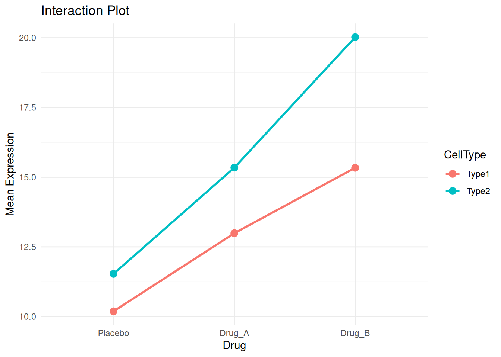
Non-parallel lines suggest an interaction. Here, Drug_B shows a stronger effect in Type2 cells.
TukeyHSD(two_way_result, which = "Drug") Tukey multiple comparisons of means
95% family-wise confidence level
Fit: aov(formula = Expression ~ Drug * CellType, data = two_way_data)
$Drug
diff lwr upr p adj
Drug_A-Placebo 3.305459 1.803818 4.807100 3.43e-05
Drug_B-Placebo 6.817309 5.315668 8.318951 0.00e+00
Drug_B-Drug_A 3.511850 2.010209 5.013492 1.47e-05When the same subjects are measured multiple times (e.g., before and after treatment), use repeated measures ANOVA.
# Simulated longitudinal data
set.seed(123)
n_subjects <- 10
repeated_data <- data.frame(
Subject = factor(rep(1:n_subjects, 3)),
Time = factor(rep(c("Baseline", "Week1", "Week2"), each = n_subjects)),
Expression = c(
rnorm(n_subjects, 10, 2), # Baseline
rnorm(n_subjects, 12, 2), # Week 1 (slight increase)
rnorm(n_subjects, 15, 2) # Week 2 (larger increase)
)
)
# Add subject-specific variation
subject_effect <- rep(rnorm(n_subjects, 0, 3), 3)
repeated_data$Expression <- repeated_data$Expression + subject_effect
head(repeated_data) Subject Time Expression
1 1 Baseline 10.158441
2 2 Baseline 8.654431
3 3 Baseline 15.802794
4 4 Baseline 12.775417
5 5 Baseline 12.723319
6 6 Baseline 15.496051ggplot(repeated_data, aes(Time, Expression, group = Subject)) +
geom_line(alpha = 0.5) +
geom_point() +
stat_summary(aes(group = 1), fun = mean, geom = "line",
color = "red", linewidth = 2) +
stat_summary(aes(group = 1), fun = mean, geom = "point",
color = "red", size = 3) +
theme_minimal() +
labs(title = "Repeated Measures: Expression Over Time",
subtitle = "Red line shows group mean")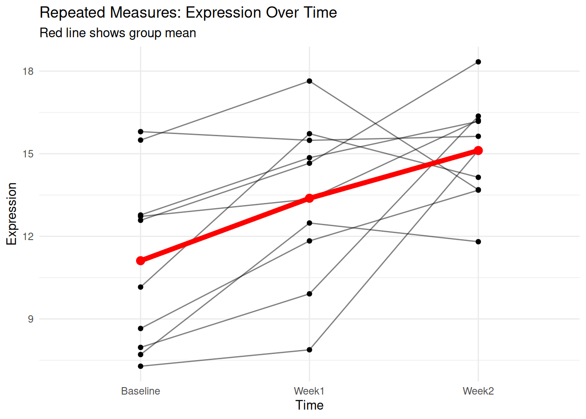
# Repeated measures ANOVA (using Error term for subject)
repeated_result <- aov(Expression ~ Time + Error(Subject/Time), data = repeated_data)
summary(repeated_result)
Error: Subject
Df Sum Sq Mean Sq F value Pr(>F)
Residuals 9 123.2 13.68
Error: Subject:Time
Df Sum Sq Mean Sq F value Pr(>F)
Time 2 80.54 40.27 9.467 0.00155 **
Residuals 18 76.57 4.25
---
Signif. codes: 0 '***' 0.001 '**' 0.01 '*' 0.05 '.' 0.1 ' ' 1When ANOVA assumptions are violated, use the Kruskal-Wallis test:
# Using the gene expression data
kruskal.test(Expression ~ Condition, data = gene_expr)
Kruskal-Wallis rank sum test
data: Expression by Condition
Kruskal-Wallis chi-squared = 7.2, df = 2, p-value = 0.02732Post-hoc for Kruskal-Wallis using Dunn’s test:
# Pairwise Wilcoxon tests with correction
pairwise.wilcox.test(gene_expr$Expression, gene_expr$Condition,
p.adjust.method = "BH")
Pairwise comparisons using Wilcoxon rank sum exact test
data: gene_expr$Expression and gene_expr$Condition
control treated1
treated1 0.1 -
treated2 0.1 0.1
P value adjustment method: BH R’s built-in PlantGrowth dataset provides a good
example:
data(PlantGrowth)
str(PlantGrowth)'data.frame': 30 obs. of 2 variables:
$ weight: num 4.17 5.58 5.18 6.11 4.5 4.61 5.17 4.53 5.33 5.14 ...
$ group : Factor w/ 3 levels "ctrl","trt1",..: 1 1 1 1 1 1 1 1 1 1 ...# Visualise
ggplot(PlantGrowth, aes(group, weight, fill = group)) +
geom_boxplot() +
geom_jitter(width = 0.1, alpha = 0.5) +
theme_minimal() +
labs(title = "Plant Growth by Treatment Group",
x = "Treatment", y = "Dried Weight")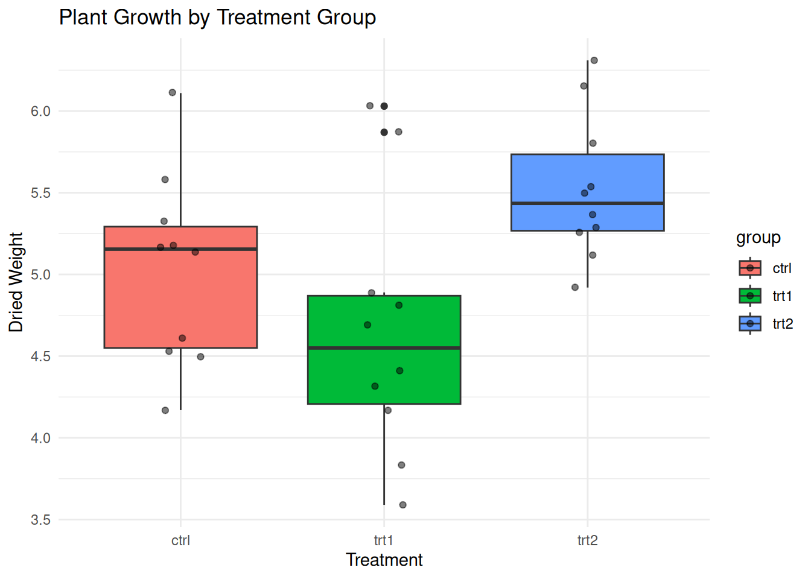
# ANOVA
plant_aov <- aov(weight ~ group, data = PlantGrowth)
summary(plant_aov) Df Sum Sq Mean Sq F value Pr(>F)
group 2 3.766 1.8832 4.846 0.0159 *
Residuals 27 10.492 0.3886
---
Signif. codes: 0 '***' 0.001 '**' 0.01 '*' 0.05 '.' 0.1 ' ' 1# Effect size
plant_ss <- summary(plant_aov)[[1]]$`Sum Sq`
cat("\nEta-squared:", round(plant_ss[1] / sum(plant_ss), 3), "\n")
Eta-squared: 0.264 # Post-hoc
TukeyHSD(plant_aov) Tukey multiple comparisons of means
95% family-wise confidence level
Fit: aov(formula = weight ~ group, data = PlantGrowth)
$group
diff lwr upr p adj
trt1-ctrl -0.371 -1.0622161 0.3202161 0.3908711
trt2-ctrl 0.494 -0.1972161 1.1852161 0.1979960
trt2-trt1 0.865 0.1737839 1.5562161 0.0120064set.seed(1)
no_diff <- data.frame(
value = rnorm(30, mean = 50, sd = 10),
group = factor(rep(c("A", "B", "C"), each = 10))
)
ggplot(no_diff, aes(group, value)) +
geom_boxplot(fill = "lightgray") +
theme_minimal() +
labs(title = "No Difference Between Groups")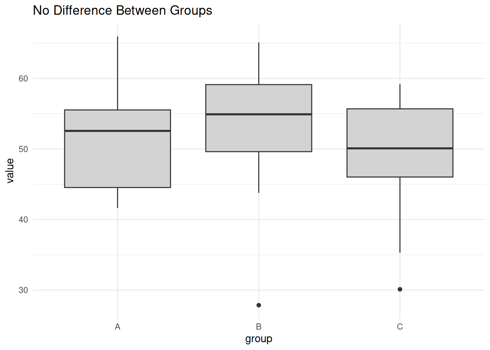
summary(aov(value ~ group, data = no_diff)) Df Sum Sq Mean Sq F value Pr(>F)
group 2 76.9 38.44 0.432 0.653
Residuals 27 2399.7 88.88 set.seed(2)
one_diff <- data.frame(
value = c(rnorm(10, 50, 5), rnorm(10, 50, 5), rnorm(10, 65, 5)),
group = factor(rep(c("A", "B", "C"), each = 10))
)
ggplot(one_diff, aes(group, value)) +
geom_boxplot(fill = "lightblue") +
theme_minimal() +
labs(title = "Group C Different from A and B")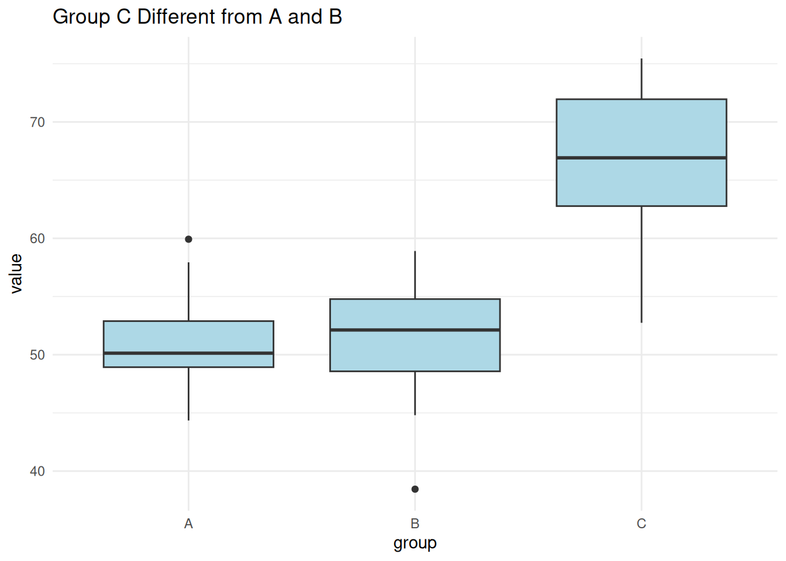
summary(aov(value ~ group, data = one_diff)) Df Sum Sq Mean Sq F value Pr(>F)
group 2 1601 800.7 21.68 2.42e-06 ***
Residuals 27 997 36.9
---
Signif. codes: 0 '***' 0.001 '**' 0.01 '*' 0.05 '.' 0.1 ' ' 1TukeyHSD(aov(value ~ group, data = one_diff)) Tukey multiple comparisons of means
95% family-wise confidence level
Fit: aov(formula = value ~ group, data = one_diff)
$group
diff lwr upr p adj
B-A -0.1569061 -6.894852 6.581039 0.9981639
C-A 15.4197086 8.681763 22.157654 0.0000146
C-B 15.5766148 8.838669 22.314560 0.0000125set.seed(3)
all_diff <- data.frame(
value = c(rnorm(10, 40, 3), rnorm(10, 50, 3), rnorm(10, 60, 3)),
group = factor(rep(c("A", "B", "C"), each = 10))
)
ggplot(all_diff, aes(group, value)) +
geom_boxplot(fill = "lightgreen") +
theme_minimal() +
labs(title = "All Groups Different")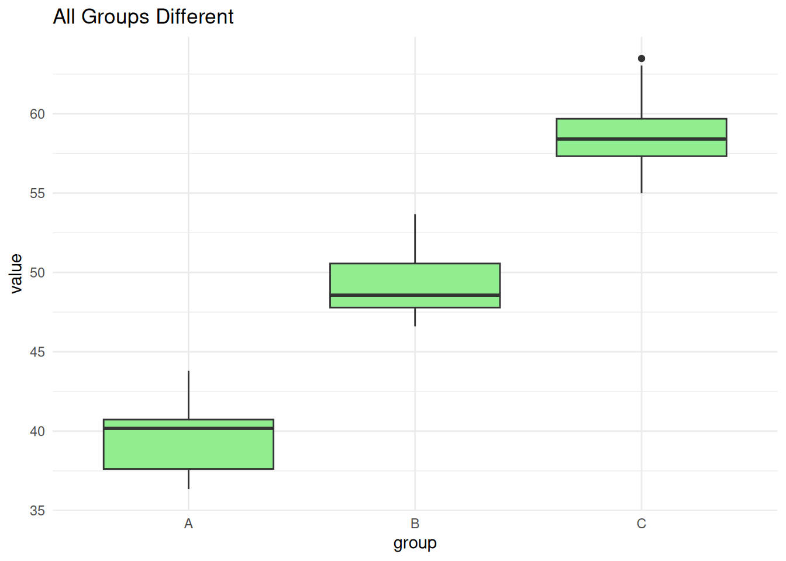
summary(aov(value ~ group, data = all_diff)) Df Sum Sq Mean Sq F value Pr(>F)
group 2 1825.3 912.6 147.3 2.98e-15 ***
Residuals 27 167.3 6.2
---
Signif. codes: 0 '***' 0.001 '**' 0.01 '*' 0.05 '.' 0.1 ' ' 1TukeyHSD(aov(value ~ group, data = all_diff)) Tukey multiple comparisons of means
95% family-wise confidence level
Fit: aov(formula = value ~ group, data = all_diff)
$group
diff lwr upr p adj
B-A 9.399671 6.639651 12.15969 0
C-A 19.105599 16.345579 21.86562 0
C-B 9.705928 6.945907 12.46595 0ANOVA and linear regression are mathematically equivalent for comparing group means:
# Using PlantGrowth data
# ANOVA approach
aov_result <- aov(weight ~ group, data = PlantGrowth)
# Linear regression approach
lm_result <- lm(weight ~ group, data = PlantGrowth)
# Compare F-statistics
cat("ANOVA F-statistic:\n")ANOVA F-statistic:summary(aov_result) Df Sum Sq Mean Sq F value Pr(>F)
group 2 3.766 1.8832 4.846 0.0159 *
Residuals 27 10.492 0.3886
---
Signif. codes: 0 '***' 0.001 '**' 0.01 '*' 0.05 '.' 0.1 ' ' 1cat("\nLinear Model F-statistic:\n")
Linear Model F-statistic:summary(lm_result)
Call:
lm(formula = weight ~ group, data = PlantGrowth)
Residuals:
Min 1Q Median 3Q Max
-1.0710 -0.4180 -0.0060 0.2627 1.3690
Coefficients:
Estimate Std. Error t value Pr(>|t|)
(Intercept) 5.0320 0.1971 25.527 <2e-16 ***
grouptrt1 -0.3710 0.2788 -1.331 0.1944
grouptrt2 0.4940 0.2788 1.772 0.0877 .
---
Signif. codes: 0 '***' 0.001 '**' 0.01 '*' 0.05 '.' 0.1 ' ' 1
Residual standard error: 0.6234 on 27 degrees of freedom
Multiple R-squared: 0.2641, Adjusted R-squared: 0.2096
F-statistic: 4.846 on 2 and 27 DF, p-value: 0.01591# The anova() function on lm gives same result
anova(lm_result)Analysis of Variance Table
Response: weight
Df Sum Sq Mean Sq F value Pr(>F)
group 2 3.7663 1.8832 4.8461 0.01591 *
Residuals 27 10.4921 0.3886
---
Signif. codes: 0 '***' 0.001 '**' 0.01 '*' 0.05 '.' 0.1 ' ' 1Key points about ANOVA:
| Situation | Test |
|---|---|
| Compare 2 groups | t-test |
| Compare 3+ groups, 1 factor | One-way ANOVA |
| Compare groups, 2 factors | Two-way ANOVA |
| Same subjects measured repeatedly | Repeated measures ANOVA |
| Assumptions violated | Kruskal-Wallis test |
| Unequal variances | Welch’s ANOVA |
Example: “A one-way ANOVA revealed a statistically significant difference in gene expression between conditions, F(2, 6) = 50.17, p = 0.002, \(\eta^2\) = 0.94. Post-hoc Tukey HSD tests showed that treated2 had significantly higher expression than control (p = 0.002) and treated1 (p = 0.047).”
sessionInfo()R version 4.5.0 (2025-04-11)
Platform: x86_64-pc-linux-gnu
Running under: Ubuntu 24.04.3 LTS
Matrix products: default
BLAS: /usr/lib/x86_64-linux-gnu/openblas-pthread/libblas.so.3
LAPACK: /usr/lib/x86_64-linux-gnu/openblas-pthread/libopenblasp-r0.3.26.so; LAPACK version 3.12.0
locale:
[1] LC_CTYPE=en_US.UTF-8 LC_NUMERIC=C
[3] LC_TIME=en_US.UTF-8 LC_COLLATE=en_US.UTF-8
[5] LC_MONETARY=en_US.UTF-8 LC_MESSAGES=en_US.UTF-8
[7] LC_PAPER=en_US.UTF-8 LC_NAME=C
[9] LC_ADDRESS=C LC_TELEPHONE=C
[11] LC_MEASUREMENT=en_US.UTF-8 LC_IDENTIFICATION=C
time zone: Etc/UTC
tzcode source: system (glibc)
attached base packages:
[1] stats graphics grDevices utils datasets methods base
other attached packages:
[1] lubridate_1.9.4 forcats_1.0.0 stringr_1.5.1 dplyr_1.1.4
[5] purrr_1.0.4 readr_2.1.5 tidyr_1.3.1 tibble_3.3.0
[9] ggplot2_3.5.2 tidyverse_2.0.0 workflowr_1.7.1
loaded via a namespace (and not attached):
[1] sass_0.4.10 generics_0.1.4 stringi_1.8.7 hms_1.1.3
[5] digest_0.6.37 magrittr_2.0.3 timechange_0.3.0 evaluate_1.0.3
[9] grid_4.5.0 RColorBrewer_1.1-3 fastmap_1.2.0 rprojroot_2.0.4
[13] jsonlite_2.0.0 processx_3.8.6 whisker_0.4.1 ps_1.9.1
[17] promises_1.3.3 httr_1.4.7 scales_1.4.0 jquerylib_0.1.4
[21] cli_3.6.5 rlang_1.1.6 withr_3.0.2 cachem_1.1.0
[25] yaml_2.3.10 tools_4.5.0 tzdb_0.5.0 httpuv_1.6.16
[29] vctrs_0.6.5 R6_2.6.1 lifecycle_1.0.4 git2r_0.36.2
[33] fs_1.6.6 pkgconfig_2.0.3 callr_3.7.6 pillar_1.10.2
[37] bslib_0.9.0 later_1.4.2 gtable_0.3.6 glue_1.8.0
[41] Rcpp_1.0.14 xfun_0.52 tidyselect_1.2.1 rstudioapi_0.17.1
[45] knitr_1.50 farver_2.1.2 htmltools_0.5.8.1 labeling_0.4.3
[49] rmarkdown_2.29 compiler_4.5.0 getPass_0.2-4